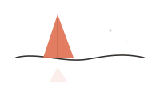
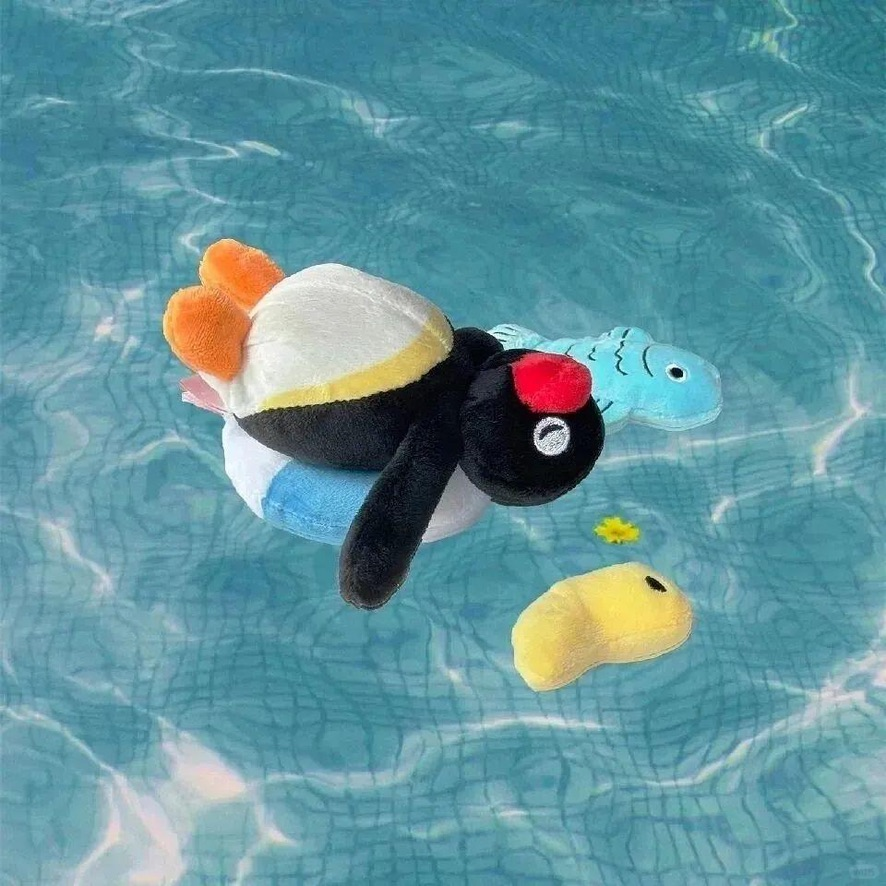

案例 / 阅读器
为开放网络设计一次更专注的阅读体验。
围绕节奏、排版和轻量操作进行的界面研究，帮助人们更长久地停留在文本里。
编辑感 UI
前端
阅读系统


精选作品
不是巨大的项目网格，只保留这个网站真正想承载的东西：专注阅读、体贴工具，以及保持温度的系统。
围绕节奏、排版和轻量操作进行的界面研究，帮助人们更长久地停留在文本里。
开放线索
受 Claude 启发，但不复制聊天气泡：这些小型 artifact 卡片保存当前问题、实验和阅读痕迹。
探索层级、渐进披露，以及既能引导又不喋喋不休的文案。
纸色、颗粒、阴影和间距，作为注意力的信号，而不是装饰。
为代码、文学、节气笔记和不该被催促的小片段保留一个慢档案。
关于 / 联系
这个首页像一张仍在使用的书桌：放精选作品、文章、原型，以及那些适合慢慢读的对话。